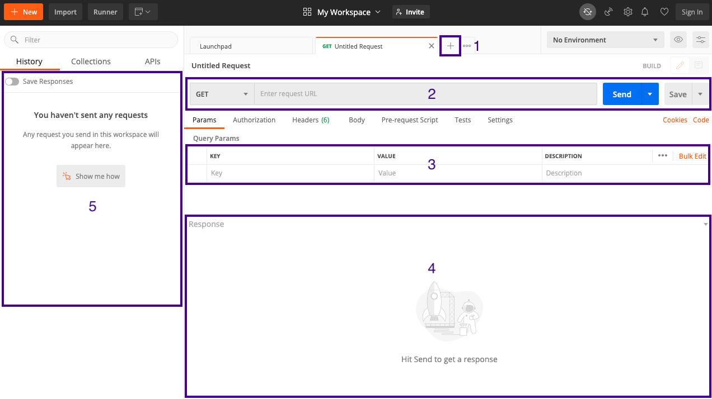

Serveur web minimal
- François Brucker
On utilise node comme un serveur web qui dit bonjour.
Le but d'un serveur web est d'attendre qu'un client le contacte et lui demande des choses sous la forme d'une url et d'une méthode. Le serveur lui répond avec un status et un message.
Préparation
Créez un dossier serveur_web où vous stockerez les fichiers de notre serveur.
Comme on va utiliser node pour gérer notre serveur, on crée le fichier node du projet :
Dans le dossier serveur_web, initialisez le projet en tapant la commande : npm init puis en tapant entrée à chaque question pour utiliser les réponses par défaut.
Vous devriez maintenant avoir un fichier nommé package.json qui contient la configuration minimale d'un projet utilisant node :
{
"name": "code",
"version": "1.0.0",
"description": "",
"main": "index.js",
"scripts": {
"test": "echo \"Error: no test specified\" && exit 1"
},
"author": "",
"license": "ISC"
}Nous allons y ajouter une configuration que vous devrez utiliser à chaque fois que vous utiliserez des bibliothèques en node (c'est à dire tout le temps) :
Ajouter la ligne "type": "module", dans le fichier de configuration package.json, juste en-dessous de la ligne 5
A la fin de cette opération, vous devriez avoir le fichier un fichier nommé package.json qui contient la configuration minimale d'un projet utilisant node :
{
"name": "code",
"version": "1.0.0",
"description": "",
"main": "index.js",
"type": "module",
"scripts": {
"test": "echo \"Error: no test specified\" && exit 1"
},
"author": "",
"license": "ISC"
}Nous allons utiliser dans toute la suite de ce cours la gestion javascript des modules (es6 modules) et non celle historique de node (commonJS). Si vous cherchez du code sur internet, vous pourrez tout de suite voir de quel type d'import il s'agit :
import http from 'http';: import javascriptconst http = require('http');: import commonJS
Lorsque vous importez des bibliothèques node, il suffit souvent de remplacer une écriture par l'autre pour que tout fonctionne.
Le code
Créez un fichier serveur_web/index.js qui sera le point d'entrée de notre serveur :
import http from "http";
const hostname = "127.0.0.1";
const port = 3000;
const server = http.createServer((req, res) => {
res.statusCode = 200;
res.setHeader("Content-Type", "text/plain");
res.end("Hello World\n");
});
server.listen(port, hostname, () => {
console.log(`Server running at http://${hostname}:${port}/`);
});Ce serveur est celui donné dans la doc de node
Pour exécuter ce fichier, dans un terminal placé dans le dossier où se trouve index.js (normalement serveur_web), tapez la commande :
node index.js
Le programme s'exécute dans le terminal et il ne rend pas la main. Il ne s'arrête pas et demande d'aller voir à l'url : http://127.0.0.1:3000. Si on tape cette adresse dans un navigateur on voit le texte : Hello World s'afficher.
Nous venons de créer un serveur web sur notre machine locale sur le port 3000.
La machine locale s'appelle :
127.0.0.1avec des nombreslocalhostavec des lettres
Allez du côté de la partie port du cours sur les url pour vous rappeler ce qu'est un port.
Regardons la syntaxe du code :
const: déclaration de constantes.import from: importation d'une bibliothèque (ici la bibliothèque http de node) et affectation de celle-ci à une variable (nommée aussihttp) : en javascript on importe toujours quelque chose
Que fait le code :
- on crée un serveur avec la fonction http.createServer. Cette fonction prend 1 paramètre en argument qui est une fonction. Cette fonction sera appelée à chaque appelle au serveur avec deux paramètres :
req(qui contiendra la requêtehttp) : de typehttp.IncomingMessageres(qui contiendra notre réponsehttp) : de typehttp.ServerResponse
- une fois le serveur crée on le place derrière un port de la machine, ici 3000.
La réponse aux requêtes du serveur est un objet qui existe déjà, ce n'est pas la réponse de notre fonction. Le boulot d'un serveur node est de renseigner les champs de cet objet puis de l'envoyer (avec res.end() par exemple).
Protocole http
On ne va pas faire un long cours sur le protocole http, on va juste décrire succinctement les requêtes (ce que le serveur reçoit du navigateur) et les réponses (ce que le serveur envoie au navigateur).
Utiliser node nous permet de nous concentrer sur ce qui est important : répondre correctement aux demandes du navigateur, sans avoir besoin d'écrire des requêtes http conformes (ce qui n'est pas très marrant).
Requête http
On peut afficher l'url de la requête : On récupère les variables hostname et port et on les affiche dans la console.
Une requête http est en deux parties :
- des entêtes qui font la demande
- le corps du message (qui est souvent vide)
On peut par exemple modifier notre serveur dans le fichier serveur_web/index.js :
// ...
const server = http.createServer((req, res) => {
console.log("-------");
console.log(req.url);
console.log("========");
console.log(req.method);
console.log("========");
console.log(req.httpVersion);
console.log("========");
console.log(req.headers);
res.statusCode = 200;
res.setHeader("Content-Type", "text/plain");
res.end("Hello World\n");
});
// ...Lorsque l'on modifie le serveur, il faut arrêter l'ancien (avec les touches ctrl+c) et le relancer. Même si l'o modifie le code de serveur_web/index.js il n'est pas pris automatiquement en compte par le serveur.
Si l'on recharge le serveur dans le navigateur, on obtient quelque chose du genre :
-------
/
========
GET
========
1.1
========
{
host: '127.0.0.1:3000',
connection: 'keep-alive',
'cache-control': 'max-age=0',
'sec-ch-ua': '"Google Chrome";v="93", " Not;A Brand";v="99", "Chromium";v="93"',
'sec-ch-ua-mobile': '?0',
'sec-ch-ua-platform': '"macOS"',
'upgrade-insecure-requests': '1',
'user-agent': 'Mozilla/5.0 (Macintosh; Intel Mac OS X 10_15_7) AppleWebKit/537.36 (KHTML, like Gecko) Chrome/93.0.4577.82 Safari/537.36',
accept: 'text/html,application/xhtml+xml,application/xml;q=0.9,image/avif,image/webp,image/apng,*/*;q=0.8,application/signed-exchange;v=b3;q=0.9',
'sec-fetch-site': 'none',
'sec-fetch-mode': 'navigate',
'sec-fetch-user': '?1',
'sec-fetch-dest': 'document',
'accept-encoding': 'gzip, deflate, br',
'accept-language': 'fr-FR,fr;q=0.9,en-US;q=0.8,en;q=0.7'
}
-------
/favicon.ico
========
GET
========
1.1
========
{
host: '127.0.0.1:3000',
connection: 'keep-alive',
pragma: 'no-cache',
'cache-control': 'no-cache',
'sec-ch-ua': '"Google Chrome";v="93", " Not;A Brand";v="99", "Chromium";v="93"',
'sec-ch-ua-mobile': '?0',
'user-agent': 'Mozilla/5.0 (Macintosh; Intel Mac OS X 10_15_7) AppleWebKit/537.36 (KHTML, like Gecko) Chrome/93.0.4577.82 Safari/537.36',
'sec-ch-ua-platform': '"macOS"',
accept: 'image/avif,image/webp,image/apng,image/svg+xml,image/*,*/*;q=0.8',
'sec-fetch-site': 'same-origin',
'sec-fetch-mode': 'no-cors',
'sec-fetch-dest': 'image',
referer: 'http://127.0.0.1:3000/',
'accept-encoding': 'gzip, deflate, br',
'accept-language': 'fr-FR,fr;q=0.9,en-US;q=0.8,en;q=0.7'
}
A chaque actualisation, le serveur est sollicité deux fois, une fois pour l'url / et une autre fois pour l'url /flavicon.ico.
Pour résumer :
- le navigateur parle en http 1.1 (ce qui est ok)
- les headers nous informent un peut plus sur lui
- il demande avec la méthode GET l'url
/au serveur puis l'url/flavicon.ico
Pour répondre à une requête http de façon satisfaisante, le serveur à toujours besoin de
- l'url
- de la méthode http utilisée par le serveur
La version de l'http n'est pas importante pour nous, c'est node qui s'occupe de communiquer directement avec le navigateur.
Réponse http
Une réponse http est toujours en trois parties :
- le status code qui résume ce que le serveur a fait avec la requête
- des headers
- le corps du message (qui peut, mais c'est rare) être vide.
Dans notre cas :
- le status est 200 (ou 200 si vous êtes ce genre de personnes)
- le header informe le navigateur du type de message : ici du texte
- le message complet : ici la chaîne de caractère
'Hello World\n'
Status
Les status HTTP d'un serveur sont importants car ils informent le client de comment on a compris leur requête.
Dans les outils de développement, c'est l'onglet network qui renseigne de ces champs.
En gros :
- 2XX: ok
- 3XX : redirection
- 4XX : requête non trouvée/non autorisée
- 5XX : erreur serveur
Les informaticiens aiment rigoler. Le status 418 fait parti d'une RFC publiée le 1/04/1998.
Côté client
Postman est un outil plutôt utilisé dans le cadre des routes des APIs. L permet de tester les réponses des serveur à des requêtes front.
Vous pouvez le télécharger ici :
En ouvrant un testeur de requêtes (cadre 1), on peut entrer une url qu'on veut tester avec la méthode HTTP correspondante (cadre 2) et éventuellement ajouter les paramètres que l'on veut envoyer avec la route dans Query Params (cadre 3). En cliquant sur Send, on verra la réponse de l'url dans la partie Response (cadre 4). Les routes que l'ont teste sont conservées dans l’historique (cadre 5) pour pouvoir être réutilisées facilement ensuite.
Interface de postman :

Tester la route de notre serveur minimal pour voir les headers et le corps du message envoyé au client.